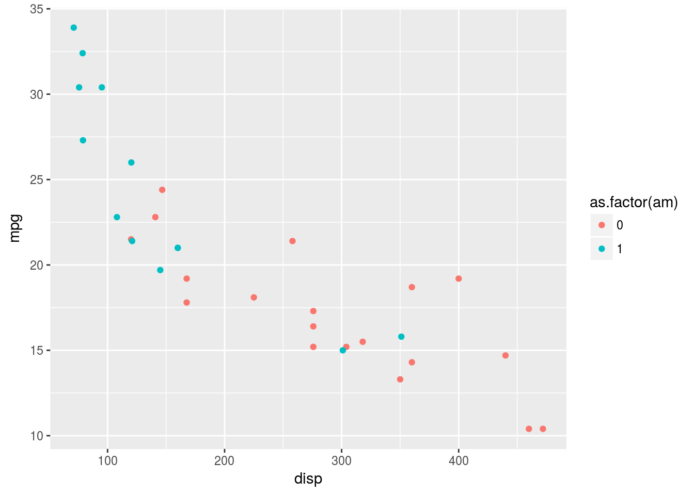
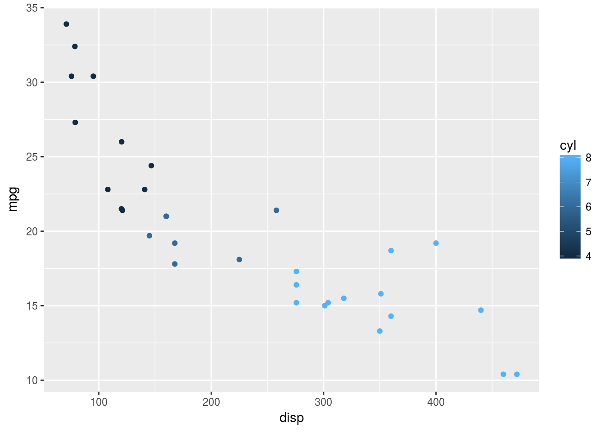
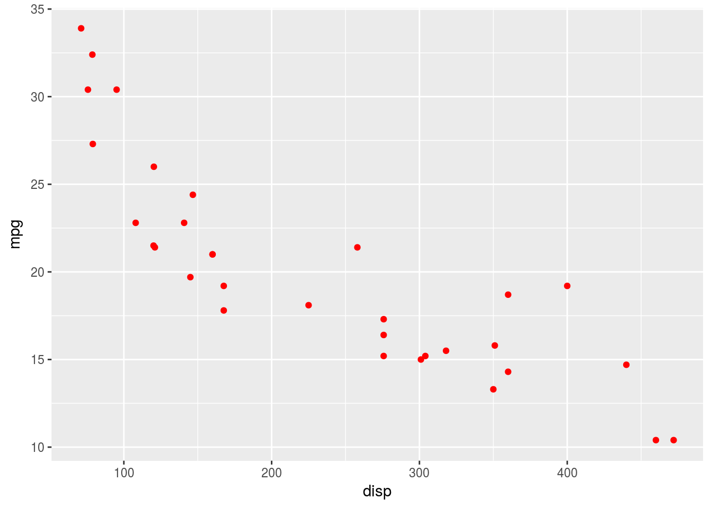
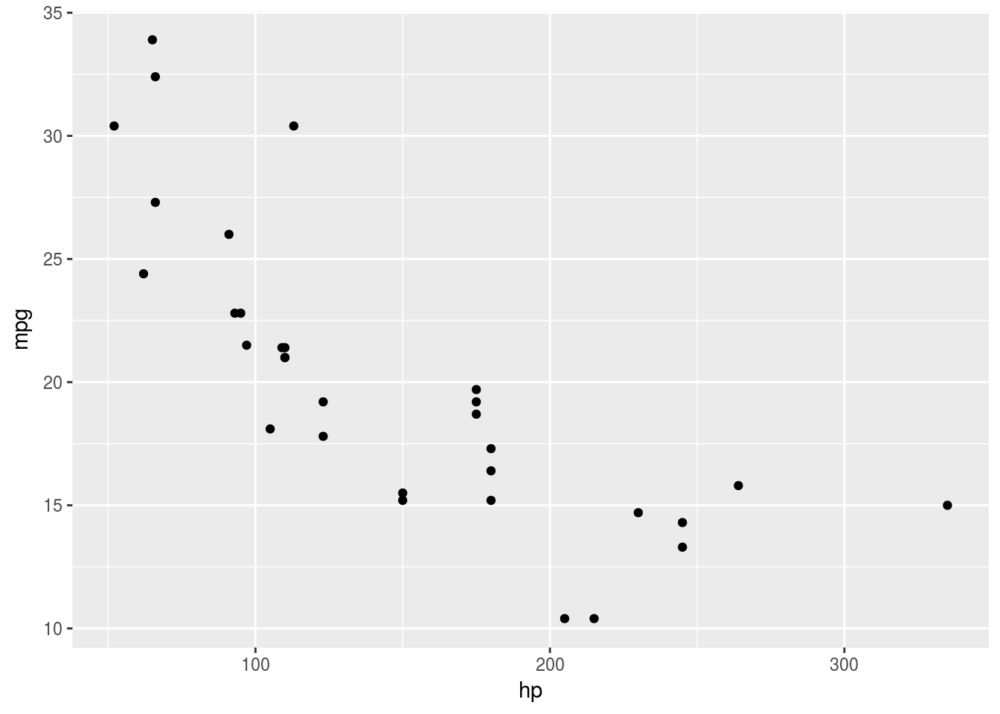
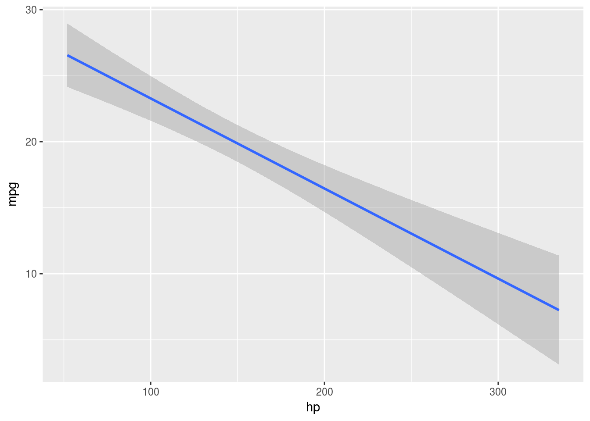
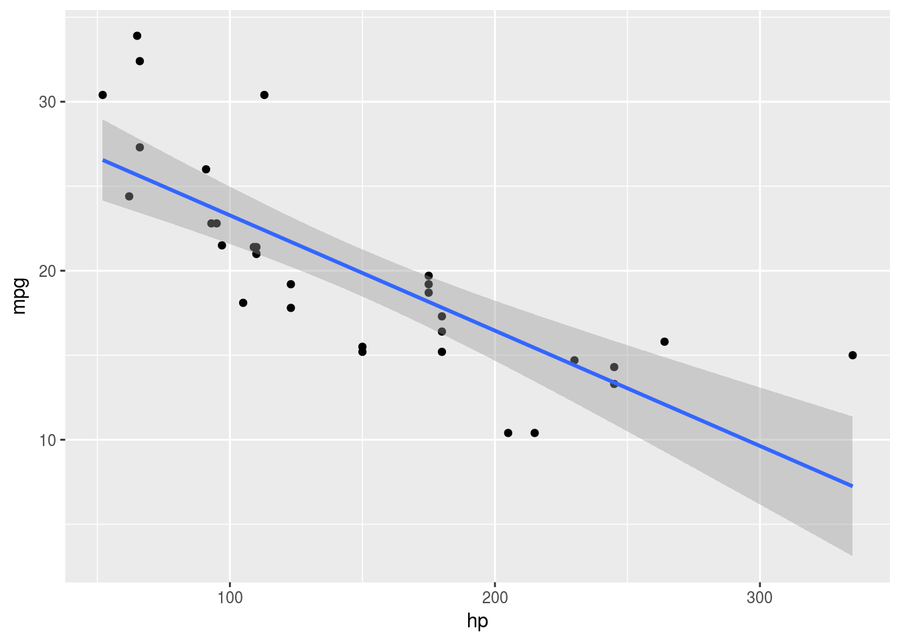

Apostila R
1.0. Introdução ao R
1.1. Introdução
Neste módulo inicial, iremos fazer uma breve introdução à linguagem R, que é uma linguagem de programação vetorizada, muito utilizada para análise de dados.
1.2. Conceitos iniciais
1.2.1 Utilizando o R como calculadora
o R é capaz de fazer operações básicas matemáticas de forma bastante simples, basta digitar a operação de forma intuitiva.
Operações básicas:
Soma:
2 + 2## [1] 4Subtração:
20 - 10## [1] 10Multiplicação:
74673 * 28380## [1] 2119219740Divisão:
293 / 7## [1] 41.85714Divisão exata:
293 %/% 7## [1] 41Resto da divisão:
293 %% 7## [1] 6
1.2.2 Criando Vetores e Matrizes
A menor estrutura de dados que o R entende é um vetor, e o que foi feito na seção anterior consistiu na criação de um vetor de um elemento, mas e se quisermos criar um vetor com mais de um elemento? Para isso, iremos utilizar a função c() que serve para concatenar os objetos na criação de um vetor.
Suponha que você queira declarar um vetor com cinco elementos: 30, 50, 70, 80, 90. Como devo proceder para criar um vetor, então?
Basta utilizar a função c() e como temos cinco argumentos, separa-se cada elemento por vírgulas.
c(30, 50, 70, 80, 90)## [1] 30 50 70 80 90Certo, criamos o nosso primeiro vetor, mas, nas nossas análises, precisamos de praticidade, e, do jeito que o vetor foi criado, não é nenhum pouco prático.
Precisamos criar uma variável que contenha o vetor. Essa nossa variável pode possuir qualquer nome, e como queremos que ela contenha o vetor que acabamos de criar, basta declarar uma variável para o vetor que criamos. Vamos chamar a variável de Despesas.
Despesas <- c(30, 50, 70, 80, 90)Agora, se quisermos ver o nosso vetor, digite o nome da variável criada e então o vetor contendo os cinco elementos irá aparecer.
Despesas## [1] 30 50 70 80 90Vamos supor que tenhamos uma nova informação, que contenha as nossas receitas nos cinco primeiros meses do ano:
Receitas <- c(100, 90, 30, 40, 120)
Receitas## [1] 100 90 30 40 120Agora que temos dois vetores, o de receitas e as despesas, como podemos fazer para uní-los? Simples! Utilizaremos uma função chamada cbind() que serve para juntar dois ou mais vetores, em duas ou mais colunas lado-a-lado, como uma tabela.
ReceitasXdespesas <- cbind(Receitas, Despesas)
ReceitasXdespesas## Receitas Despesas
## [1,] 100 30
## [2,] 90 50
## [3,] 30 70
## [4,] 40 80
## [5,] 120 90Certo, temos uma tabela com duas colunas, demonstrando as receitas e as despesas durante cinco meses, porém não temos nenhum nome para as linhas da nossa tabela. Então, para facilitar nossas vidas vamos deixar a tabela atrativa visualmente, nomeando cada linha dela.
Antes de mudarmos os nomes das linhas, seria mais interessante declaramos uma variável contendo os nomes dos meses (representando os nomes das linhas). Segue o mesmo processo de criação de uma variável numérica, mas com uma diferença de que é necessário colocar aspas (“”) em cada mês, por se tratar de uma variável string.
names <- c("Janeiro", "Fevereiro", "Março", "Abril", "Maio")
names## [1] "Janeiro" "Fevereiro" "Março" "Abril" "Maio"Agora que temos os meses necessários, podemos declarar o nome das linhas de nossa tabela.
rownames(ReceitasXdespesas) <- names
ReceitasXdespesas## Receitas Despesas
## Janeiro 100 30
## Fevereiro 90 50
## Março 30 70
## Abril 40 80
## Maio 120 90Temos, portanto, uma tabela organizada com os valores das Receitas e Despesas e os meses. Suponha, agora que a pessoa queira ver seu resultado entre as receitas e as despesas de cada mês? Basta subtrair as receitas com as despesas.
Balanco <- Receitas - DespesasUnindo tudo, temos:
Total <- cbind(ReceitasXdespesas, Balanco)
Total## Receitas Despesas Balanco
## Janeiro 100 30 70
## Fevereiro 90 50 40
## Março 30 70 -40
## Abril 40 80 -40
## Maio 120 90 30Agora que temos as receitas e despesas de cada mês, se quisermos observar o resultado do mês de abril, como faremos? Basta por colchetes [] no final da variável Total, e com isso selecionar a quarta linha e a terceira coluna, ou identificar qual a linha e a coluna por nome entre colchete.
Total[4, 3]## [1] -40Total["Abril", "Balanco"]## [1] -40Com isso, temos a localização exata de um objeto da matriz.
1.2.3 Data Frame
Nesta seção, iremos falar sobre dataframes que são listas de variáveis com o mesmo número de linhas.
Vamos utilizar a matriz que utilizamos anteriormente, Total. Iremos verificar se é um dataframe. Vamos utilizar a função class(), que serve para analisar a classe do objeto em questão.
class(Total)## [1] "matrix"Como podemos observar, a tabela que construímos anteriormente é uma matriz e como analista de dados, às vezes, precisamos utiilzar uma função em um conjunto de dados, o que só seria possível em um data frame na linguagem R. Portanto, como transformar nossa matriz num dataframe? Basta utilizar a função data.frame().
df <- data.frame(Total)
df## Receitas Despesas Balanco
## Janeiro 100 30 70
## Fevereiro 90 50 40
## Março 30 70 -40
## Abril 40 80 -40
## Maio 120 90 30Agora, se quisermos manipular o dataframe, como por exemplo, excluir duas colunas.
É simples! Primeiro, temos que aprender a acessar uma coluna do dataframe, que se dá por meio do símbolo $. Exemplo: acessar somente as receitas:
df$Receitas## [1] 100 90 30 40 120Supondo que uma pessoa queira visualizar as receitas do mês de março apenas, como deve ser feito? Igual a uma matriz. Ao invés de separar por vírgulas, iremos juntar os dois colocando o dollar sign e os colchetes:
df$Receitas[3]## [1] 30Voltando para o questionamento anterior, como remover uma coluna do dataframe? Basta repetir o processo anterior e declarar NULL
df$Receitas <- NULL
df$Despesas <- NULL
df## Balanco
## Janeiro 70
## Fevereiro 40
## Março -40
## Abril -40
## Maio 30Dessa forma, temos nosso dataframe completo, apenas com o resultado final do balanço.
Se quisermos filtrar apenas os meses com balanço positivo, como fazer de uma maneira simples?
df[df$Balanco>0,]## [1] 70 40 302.0 RMarkdown
2.1. Cabeçalho no R Markdown
Para fazer um cabeçalho no R Markdown, utilize o símbolo *.
OBS: É conviniente pular uma linha para cada escrita do texto para cada formato desejado.
2.2 Itálico e Negrito
*= itálico
**= Negrito
A Base de dados que iremos utilizar será a mtcars, que é uma base de dados que vem com a instalação do RStudio.
2.2.1 Exemplo:
'= deixar comando como código
2.3 Listas
2.3.1 Lista ordenada
- Filipe
- Igor
- Victor
- Nathan
- Manu
2.3.2 Lista não ordenada
- Filipe
- Igor
- Victor
- Nathan
- Manu
2.4 Criando Links no Markdown
Para baixar qualquer arquivo de aula, etc., é só acessar o menu Github. Entre [ ] coloque o texto e ( )insere o link.
2.5. Criando fórmulas matemáticas
Para escrevermos as funções matemáticas, teremos que ter um conhecimento básico de LaTeX, já que esse tipo de linguagem é nativamente feita para a produção científica.
2.5.1. Introdução ao LaTeX
Como dito anteriormente, para escrevermos equações e funções matemáticas no R, temos que utilizar o LaTeX, para isso, iremos ter em mente um breve resumo sobre a linguagem:
\[ X^{2} \]
2.5.1.2 Exemplos
5.1.1 Razão e fração a/b
\[ \sqrt{\frac{a}{b}} \]
2.5.1.3 Regressão Linear
\[ y = \alpha +\beta_{1}X_{1}+e \]
2.6.Bloco de Códigos
Podemos criar blocos inline ou em bloco.
x<- c("zurubabel")
str(mtcars)## 'data.frame': 32 obs. of 11 variables:
## $ mpg : num 21 21 22.8 21.4 18.7 18.1 14.3 24.4 22.8 19.2 ...
## $ cyl : num 6 6 4 6 8 6 8 4 4 6 ...
## $ disp: num 160 160 108 258 360 ...
## $ hp : num 110 110 93 110 175 105 245 62 95 123 ...
## $ drat: num 3.9 3.9 3.85 3.08 3.15 2.76 3.21 3.69 3.92 3.92 ...
## $ wt : num 2.62 2.88 2.32 3.21 3.44 ...
## $ qsec: num 16.5 17 18.6 19.4 17 ...
## $ vs : num 0 0 1 1 0 1 0 1 1 1 ...
## $ am : num 1 1 1 0 0 0 0 0 0 0 ...
## $ gear: num 4 4 4 3 3 3 3 4 4 4 ...
## $ carb: num 4 4 1 1 2 1 4 2 2 4 ...Inline
rx[1]
7.Flags do Bloco de código
Flags
Eval
O eval habilita ou não a execução do código, utilizando eval= FALSE o código não será executado e possíveis valores não serão armazenados.
str(x<-"Churros")## chr "Churros"echo
O echo mostra o código junto ao resultado.
str(mtcars)## 'data.frame': 32 obs. of 11 variables:
## $ mpg : num 21 21 22.8 21.4 18.7 18.1 14.3 24.4 22.8 19.2 ...
## $ cyl : num 6 6 4 6 8 6 8 4 4 6 ...
## $ disp: num 160 160 108 258 360 ...
## $ hp : num 110 110 93 110 175 105 245 62 95 123 ...
## $ drat: num 3.9 3.9 3.85 3.08 3.15 2.76 3.21 3.69 3.92 3.92 ...
## $ wt : num 2.62 2.88 2.32 3.21 3.44 ...
## $ qsec: num 16.5 17 18.6 19.4 17 ...
## $ vs : num 0 0 1 1 0 1 0 1 1 1 ...
## $ am : num 1 1 1 0 0 0 0 0 0 0 ...
## $ gear: num 4 4 4 3 3 3 3 4 4 4 ...
## $ carb: num 4 4 1 1 2 1 4 2 2 4 ...Warning
O Warning exibe as possíveis advertêcias no código
warning("Será que o resultado é esse mesmo?")## Warning: Será que o resultado é esse mesmo?Error
O error tem a função de ocultar ou não as mensagens de erro do seu código. Se for FALSE também não deixa de executar o código
2.8. Gerando documentos em outros formatos
Para gerar documentos em PDFS, PPTs, HTML, word, basta inserir o tipo de dado no output, no bloco inicial do documento.
2.8.1 Possíveis conversões
html_documentpdf_document- Se não fucionar, baixe e instale o pacote MikTekword_documentbeamer_presentationslidy_presentationioslides_presentation
2.9 Opções de tabelas
Existem diversos pacotes no R que interagem com o Rmarkdown para fazer tabelas.
É fácil utilizá-los com o pacote knitr, função kable:
library(knitr)
kable(mtcars[1:5, ], caption = "Tabela com knitr")| mpg | cyl | disp | hp | drat | wt | qsec | vs | am | gear | carb | |
|---|---|---|---|---|---|---|---|---|---|---|---|
| Mazda RX4 | 21.0 | 6 | 160 | 110 | 3.90 | 2.620 | 16.46 | 0 | 1 | 4 | 4 |
| Mazda RX4 Wag | 21.0 | 6 | 160 | 110 | 3.90 | 2.875 | 17.02 | 0 | 1 | 4 | 4 |
| Datsun 710 | 22.8 | 4 | 108 | 93 | 3.85 | 2.320 | 18.61 | 1 | 1 | 4 | 1 |
| Hornet 4 Drive | 21.4 | 6 | 258 | 110 | 3.08 | 3.215 | 19.44 | 1 | 0 | 3 | 1 |
| Hornet Sportabout | 18.7 | 8 | 360 | 175 | 3.15 | 3.440 | 17.02 | 0 | 0 | 3 | 2 |
3.0. Introdução ao pacote ggplot2()
3.1. Base de dados (mtcars)
Os dados foram extraídos da revista Motor Trend nos Estados Unidos de 1974 e compreendem o consumo de combustível e 10 aspectos do projeto e desempenho de 32 automóveis (modelos 1973-1974).
Formato dos dados (mtcars)
Os dados estão estruturados em um data frame contendo 32 observações e 11 variáveis.
3.1.1 Nome dos dados (mtcars)
names(mtcars)## [1] "mpg" "cyl" "disp" "hp" "drat" "wt" "qsec" "vs" "am" "gear"
## [11] "carb"3.1.2. Significado de cada variável
mpg- milhas de mpg / galão (EUA).cyl- Número de cilindrosdisp- Displacement (cu.in.)hp- Potência brutadrat- Relação do eixo traseirowt- peso - (1000 lbs)qsec- 1/4 milha horavs- Motor (0 = em forma de V, 1 = direito)am- Transmissão (0 = automático, 1 = manual)gear- Número de marchas para frentecarb- Número de carburadores
3.1.3. Visualização dos dados
A visualização dos dados faz parte da análise exploratória, uma etapa muito importante na análise estatística, pois a partir dela criamos a intuição para escolher o modelo mais adequado para o nosso problema.
Visualizações podem ser medidas resumo (frequência, média, variância, mínimo, máximo, etc.) um conjunto de medidas organizadas em uma tabela, ou a representação (de uma parte) dos dados em um gráfico.
Portanto, nesta aula focaremos na construção de gráficos. É um processo que facilita a visualização dos dados construídos por ferramentas disponíveis no R.
3.2. O que é um gráfico?
A construção de gráficos no R foi revolucionada com a criação do pacote ggplot2, proveniente da tese de doutorado de Hadley Wickham que apresentou um novo modelo de apresentação e criação de gráficos na linguagem R.
3.2.1. Vantagens do pacote ggplot2
Existem inúmeras vantagens, dentre elas:
Gráficos naturalmente mais estéticos;
Maior acessibilidade de ajustar os gráficos do jeito que desejar;
Estrutura padronizada das funções para aprender com maior interação;
Possibilidade de criar uma imensa gama de gráficos com poucas linhas de código.
3.2.2. Comando para instalação do pacote (ggplot2)
Utiliza-se o comando install.packages("ggplot2") para instalar e, para carregar o pacote, usa-se:
library(ggplot2)3.2.3. Camadas de um gráfico
No ggplot2, os gráficos são construídos camada por camada (ou por layers, em inglês), sendo a primeira delas dada pela função ggplot() (repare que não usa-se o 2). Essa função recebe um data frame e cria a camada base do gráfico. Se rodarmos apenas a função ggplot(), obteremos um painel em branco.
Vamos agora fazer o primeiro gráfico de dispersão:
ggplot(data = mtcars) +
geom_point(mapping = aes(x = disp, y = mpg))
A figura gerada pelo código acima é um gráfico de dispersão. Observe que:
como vimos, a primeira camada é dada pela função ggplot() e recebe um data frame;
a segunda camada é dada pela função geom_point(), que especifica a forma geométrica utilizada no mapeamento das observações;
as camadas são somadas com um
+;o mapeamento na função geom_point() recebe a função aes(), que é responsével por descrever como as variáveis serão mapeadas nos aspectos visuais da forma geométrica escolhida, no caso, pontos.
A combinação da função ggplot() e de uma ou mais funções geom_() definirá o tipo de gráfico gerado.
Podemos acrescentar uma terceira camada ao gráfico, agora com uma personalizão. Repare como é simples acrescentar labels ao gráfico com a função labs().
ggplot(data = mtcars) + geom_point(mapping = aes(x = disp, y = mpg)) +
labs(x = "Cilindradas", y = "Milhas/galão")
3.3. Aesthetics
O papel da função aes() (de aesthetics, estética em inglês) é indicar a relação entre os dados e cada aspecto visual do gráfico, como qual variével será representada no eixo x, qual será representada no eixo y, a cor e o tamanho dos componentes geométricos, etc. Os aspectos que podem ou devem ser mapeados dependem do tipo de gráfico que você está construindo.
Outro aspecto que pode ser mapeado nesse gráfico é a cor dos pontos:
ggplot(data = mtcars) +
geom_point(mapping = aes(x = disp, y = mpg, color = as.factor(am)))
Agora, a variável am (tipo de transmissão) foi mapeada em relação a cor dos pontos com pontos vermelhos correspondendo à transmissão automática (valor 0), e pontos azuis à transmissão manual (valor 1). Observe que inserimos a variável am como um fator, pois temos interesse apenas nos valores 0 e 1. No entanto, também podemos mapear uma variável contínua em relação à cor dos pontos:
ggplot(mtcars) +
geom_point(mapping = aes(x = disp, y = mpg, colour = cyl))
Aqui, o número de cilindros, cyl, é representado pela tonalidade da cor azul. Note que, por padrão, a legenda é inserida automaticamente ao gráfico. É possível, também, mapear o tamanho dos pontos em uma variável de interesse:
ggplot(mtcars) +
geom_point(mapping = aes(x = disp, y = mpg, color = cyl, size = wt))
Segue abaixo uma lista dos aspectos visuais mais utilizados:
color=: altera a cor de formas que não têm área (pontos e retas). fill=: altera a cor de formas com área (barras, caixas, densidades, áreas). size=: altera o tamanho de formas. type=: altera o tipo da forma, geralmente usada para pontos. linetype=: altera o tipo da linha.
Até agora, sempre mapeamos um aspecto estético relacionado a uma variável. Muitas vezes queremos apenas modificar um aspecto sem mapeá-lo atrelados a variáveis. Por exemplo, no gráfico a seguir, modificamos a cor de todos os pontos.
ggplot(mtcars, aes(y = mpg, x = disp)) +
geom_point(color = "red")
A principal diferença aqui reside na especificação do argumento color = fora da função aes(). Dessa forma, podemos controlar todos os aspectos de uma forma geom?trica.
ggplot(mtcars, aes(y = mpg, x = disp)) +
geom_point(color = "red")
A principal diferença aqui é que especificamos o argumento color = fora da função aes(). Dessa forma, podemos controlar todos os aspectos de uma forma geométrica.
ggplot(mtcars, aes(y = mpg, x = disp)) +
geom_point(colour = "red", size = 2, shape = 3, alpha = 0.5)
3.4. Geoms
Os geoms definem qual forma geométrica será utilizada para a visualização das observações. Como vimos previamente, a função geom_point() gera gráficos de dispersão transformando pares (x,y) em pontos. Veja a seguir outros geoms bastante utilizados:
-geom_line - para linhas definidas por pares (x,y). -geom_abline - para retas definidas por um intercepto e uma inclinação. -geom_hline - para retas horizontais. -geom_bar - para barras. -geom_histogram - para histogramas. -geom_boxplot - para boxplots. -geom_density - para densidades. -geom_area - para áreas.
Veja a seguir como é fácil gerar diversos gráficos utilizando a mesma estrutura do gráfico de dispersão acima como o bloxpot:
ggplot(mtcars) +
geom_boxplot(aes(x = as.factor(cyl), y = mpg))
Note que para fazer um boxplot para cada grupo, precisamos passar um fator para o aspecto x do gráfico.
ggplot(mtcars) +
geom_histogram(aes(x = mpg))## `stat_bin()` using `bins = 30`. Pick better value with `binwidth`.
4.0. Regressão linear
A regressão linear é um método estatístico utilizado para verificar se alguma variável da amostra (independente) se associa a outra variável (dependente), e, se isso se verificar, em qual direção, positiva ou negativa. Essa associação é observada pelo coeficiente angular (\(\beta\)) da regressão que iremos estimar.
Fórmula da regressão linear:\[Y = \alpha + \beta*X + \epsilon\] Aplicando no R, usaremos a base de dados mtcars, que já vem na própria linguagem. Queremos observar se a variável hp (independente), têm alguma influência na mpg (dependente):
\[mpg = \alpha + \beta*hp + \mu \]
Para fazer a regressão no R, usaremos o seguinte comando:
lm(formula, data, subset)- Significado de cada argumento da função lm:
- função lm: significa linear model, ou seja, o modelo que queremos utilizar;
- formula: Fórmula que será utilizada para a regressão;
- data: base de dados que iremos utilizar no modelo;
- subset: sub-amostra da base de dados que iremos utilizar;
Como queremos explicar mpg através de hp, a fórmula será o seguinte:
reg1 <- lm(mpg ~ hp, data = mtcars)
reg1##
## Call:
## lm(formula = mpg ~ hp, data = mtcars)
##
## Coefficients:
## (Intercept) hp
## 30.09886 -0.06823Observando o coeficiente da regressão, podemos ver que o coeficiente da variável independente é negativo com relação à dependente.
Utilizando a função summary() que serve para dar um sumário do objeto que colocaremos como input na função.
summary(reg1)##
## Call:
## lm(formula = mpg ~ hp, data = mtcars)
##
## Residuals:
## Min 1Q Median 3Q Max
## -5.7121 -2.1122 -0.8854 1.5819 8.2360
##
## Coefficients:
## Estimate Std. Error t value Pr(>|t|)
## (Intercept) 30.09886 1.63392 18.421 < 2e-16 ***
## hp -0.06823 0.01012 -6.742 1.79e-07 ***
## ---
## Signif. codes: 0 '***' 0.001 '**' 0.01 '*' 0.05 '.' 0.1 ' ' 1
##
## Residual standard error: 3.863 on 30 degrees of freedom
## Multiple R-squared: 0.6024, Adjusted R-squared: 0.5892
## F-statistic: 45.46 on 1 and 30 DF, p-value: 1.788e-07Obseravndo o sumário da regressão, podemos observar que há uma forte significância da variável horse power sobre a mpg, e, observando a primeira coluna, podemos ver que o coeficiente é negativo, ou seja, conclui-se que, para a amostra em questão, quanto maior a força do motor, menos milhas por galão são feitas.
4.2. Gráficos
4.2.1. Gráfico de dispersão
Queremos observar pontualmente como as variáveis escolhidas se comportam.
Iremos utilizar o pacote ggplot2, para relembrar, deve-se instalá-lo através do comando install.packages() e logo então carregá-lo através do comando library():
install.packages("ggplot2")
library(ggplot2)Tendo carregado os pré-requisitos, podemos fazer o gráfico de dispersão das variáveis, ou seja, observar se há lineariedade ou não nas variáveis através dos seguintes comandos:
ggplot(data = mtcars) + geom_point(mapping = aes(x = hp, y = mpg))- Significado das funções e de cada argumento:
- ggplot(): serve para selecionar o objeto que contém o os objetos a serem plotados;
- data: argumento para selecionar a base de dados do objeto a ser plotado;
- geom_point(): função que determina a geometria do gráfico, no caso, de dispersão;
- mapping: argumento para determinar os objetos a serem rastreados;
- aes(): função para determinar as variáveis do dataframe;
library(ggplot2)
ggplot(data = mtcars) + geom_point(mapping = aes(x = hp, y = mpg))
Podemos visualizar que a dispersão entre essas duas variáveis é praticamente linear. Podemos corroborar esse achado com o modelo de regressão.
4.2.2 Observando a reta da regressão
Após a visualização de forma pontual, queremos observar a reta da regressão entre as duas variáveis, para ver se de fato a regressão se confirma, e observar também se há significância estatística. Utilizaremos o seguinte comando:
ggplot(data = mtcars) + geom_smooth(mapping = aes(x = hp, y = mpg), method = "lm")O que difere do comando anterior, é que, como queremos uma linha reta teremos que utilizar a função geom_smooth() que serve para visualizar uma reta, diferentemente do anterior, utilizaremos um método para isso, o linear model. Para ver como a reta se comporta com a regressão.
ggplot(data = mtcars) +geom_smooth(mapping = aes(x = hp, y = mpg), method = "lm") Mais uma vez, podemos confirmar a relação negativa entre as duas variáveis ## Plotando os gráficos em apenas um só
Agora, se quisermos unir os dois gráficos, basta colocarmos um + entre os dois códigos ou seja, queremos unir o gráfico de dispersão, com o gráfico da reta da regressão. Basta utilizar os mesmos códigos, apenas somando-os.
ggplot(data = mtcars) + geom_point(mapping = aes(x = hp, y = mpg))+
geom_smooth(mapping = aes(x = hp, y = mpg), method = "lm")
Visualizando:
ggplot(data = mtcars) + geom_point(mapping = aes(x = hp, y = mpg))+
geom_smooth(mapping = aes(x = hp, y = mpg), method = "lm")